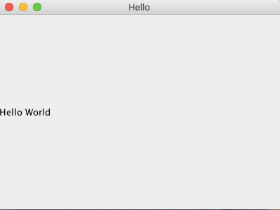

I use Maven to bootstrap new Java project with my chosen flavor of artifacts (and framework/libraries), thereon all aspects of development are managed via Eclipse IDE. These modern tools have certainly made our lives easy. Nonetheless, it is essential to understand underlying rudiments.
In this posts I am going to discard all fancy tools and write Java programs using command line tools, gradually moving up to Maven.
Before we start, we need:
Get the source code used in this post from github. Go ahead and clone the repository:
git clone git@github.com:prashanta/java_rudiments.git
cd java_rudiments
The flow is going to look like this:
Lets start off with a basic Java program called App.java:
public class App{
public static void main(String [] args){
System.out.println("Hello World");
}
}
Point to note here is that the class name App needs to be same as the .java filename. Lets compile this simple program using javac:
javac -verbose App.java
This will compile App.java to App.class. This .class file contains Java Bytecode representation of our App.java program that can be executed by JVM (Java Virtual Machine). In the above command, -verbose flag will print out detail steps to console, among them interesting bit it this:
[search path for source files: .]
This is the location where javac will look for source files, in our case its current directory by default. Then the following message list out locations (comma separated) where javac will look for pre-compiled class files that are necessary. The last location is the current directory (dot means current directory).
... [search path for class files: /Library/Java/JavaVirtualMachines/jdk1.8.0_121.jdk/Contents/Home/jre/lib/resources.jar,/Library/Java/JavaVirtualMachines/jdk1.8.0_121.jdk/Contents/Home/jre/lib/rt.jar,/Library/Java/JavaVirtualMachines/jdk1.8.0_121.jdk/Contents/Home/jre/lib/sunrsasign.jar,/Library/Java/JavaVirtualMachines/jdk1.8.0_121.jdk/Contents/Home/jre/lib/jsse.jar,/Library/Java/JavaVirtualMachines/jdk1.8.0_121.jdk/Contents/Home/jre/lib/jce.jar,/Library/Java/JavaVirtualMachines/jdk1.8.0_121.jdk/Contents/Home/jre/lib/charsets.jar,/Library/Java/JavaVirtualMachines/jdk1.8.0_121.jdk/Contents/Home/jre/lib/jfr.jar,/Library/Java/JavaVirtualMachines/jdk1.8.0_121.jdk/Contents/Home/jre/classes,/Library/Java/JavaVirtualMachines/jdk1.8.0_121.jdk/Contents/Home/jre/lib/ext/cldrdata.jar,/Library/Java/JavaVirtualMachines/jdk1.8.0_121.jdk/Contents/Home/jre/lib/ext/dnsns.jar,/Library/Java/JavaVirtualMachines/jdk1.8.0_121.jdk/Contents/Home/jre/lib/ext/jaccess.jar,/Library/Java/JavaVirtualMachines/jdk1.8.0_121.jdk/Contents/Home/jre/lib/ext/jfxrt.jar,/Library/Java/JavaVirtualMachines/jdk1.8.0_121.jdk/Contents/Home/jre/lib/ext/localedata.jar,/Library/Java/JavaVirtualMachines/jdk1.8.0_121.jdk/Contents/Home/jre/lib/ext/nashorn.jar,/Library/Java/JavaVirtualMachines/jdk1.8.0_121.jdk/Contents/Home/jre/lib/ext/sunec.jar,/Library/Java/JavaVirtualMachines/jdk1.8.0_121.jdk/Contents/Home/jre/lib/ext/sunjce_provider.jar,/Library/Java/JavaVirtualMachines/jdk1.8.0_121.jdk/Contents/Home/jre/lib/ext/sunpkcs11.jar,/Library/Java/JavaVirtualMachines/jdk1.8.0_121.jdk/Contents/Home/jre/lib/ext/zipfs.jar,/System/Library/Java/Extensions/MRJToolkit.jar,.] ...
You can omit -verbose flag for regular use. Lets run this compiled Java program by passing class name to java command, in our case its App:
java App
Hello World
java will invoke main method from App class.
Lets get a bit more complicated than that and introduce one more source file - Calc.java:
public class Calc{
private int a;
private int b;
public Calc(int a, int b){
this.a = a;
this.b = b;
}
public int add(){
return a+b;
}
}
Edit App.java to use this new class:
public class App
{
public static void main(String[] args){
Calc a = new Calc(1,2);
System.out.println("Hello World!" + a.add());
}
}
Its always a good practice to place all the compiled class files in a separate directory like target/class. For this during compilation we tell javac where we want to put the compiled class files using -d option.
mkdir target
mkdir target/class
javac -verbose -d target/class App.java
When compiling App.java, since Calc class is refrenced in it, javac will look for source file Calc.java in current directory and compile it too. If Calc.java is in some other directory, -sourcepath flag can be used to indicate location where the additional source files can be found. This is how the folder structure looks after a successful compile:
.
├── App.java
├── Calc.java
└── target
└── class
├── App.class
└── Calc.class
To run the program we need to tell java where to look for the class files using -cp option:
java -cp target/class App
We could also run the file from target/class folder. In this case we can dropping the -cp option because java will look for referenced class files in the working directory.
cd target/class
java App
Tip: A java file can contain multiple class declaration, but can have only one public class, whose name is same as the filename.
As application starts getting complex, it will make more sense to structure your source code in folders based on some sort of similarity or functionality. This is where java package comes in. Java package is a method of bundling similar source files. It also helps avoid naming conflicts; and by archiving the package in JAR files, it becomes convenient to distribute and reuse libraries. Lets start off by looking at how we can package the Calc class:
package com.foo
public class Calc{
private int a;
private int b;
public Calc(int a, int b){
this.a = a;
this.b = b;
}
public int add(){
return a+b;
}
}
The first line in snippet above indicates that Calc class belongs to com.foo package. When using package, the package notation should match the folder structure. Hence the source file Calc.java is located inside the com/foo folder. This is how java compiler will look for included packages during compile time and later by java to run the compiled bytecode.
Let use this class in a App.java program which will be packaged inside com.main package:
package com.main;
include com.foo.Calc;
public class App{
public static void main(){
Calc c = new Calc(1,2);
System.out.println("Sum = " + c.add());
}
}
Again here we are packaging App.java in a different package called com.main (inside folder com/main). In the second line we are including our Calc class by telling where to find it - com.foo.Calc. Java will look for the reference Calc class in package - com.foo.
Again we would want to put the compiled classes in a separate directory - target/class:
javac -d target/class com/main/App.java
Here is a snapshot of the folder structure.
.
├── com
│ ├── foo
│ │ └── Calc.java
│ └── main
│ └── App.java
└── target
└── com
├── foo
│ └── Calc.class
└── main
└── App.class
Compiled byte code for Calc.java is placed in the path target/com/foo. To run the program we need to indicate the folder that contains the class files using -cp option:
java -cp target/class com.main.App
This will not work:
java -cp target/class App
Error: Could not find or load main class App
Nor will this work:
cd target/class/com/main
java App
Error: Could not find or load main class App
This is because java will look for App class inside target/class (or target/class/com/main in second case), but our App class is inside target/class bundled in com.main package. We need to invoke the program using the same package notation - com.main.App. Think of the folder in -cp option as the point from where all the referenced classes in their respective packages need to be looked up from.
Lets look at the target folder that contains compiled classes
└── target
└── class
└── com
├── foo
│ └── Calc.class
└── main
└── App.class
It's also possible and a very common practice, to package the entire compiled target directory in an archive file called JAR. Let's create JAR file using jar command that takes a bunch of options, resulting name of jar file, path to main class and directory to archive:
jar cvfe Calc.jar com.main.App -C target/class .
To run this JAR,
java -cp Calc.jar com.main.App
Now this jar file can be distributed to be used by anyone without actually exposing the source code.
With Class Libraries Here we are going to utilize extenal library Let's start off by using the previously created Calc.jar archive. Here we are going to import the functionality of Calc to our new program.
We will create a simple application:
package com.bar;
import com.foo.Calc;
public class App{
public static void main(String [] args){
Calc c = new Calc(12,23);
System.out.println("Sum = " + c.add());
}
}
Few things happeing in this program -
To compile:
javac -d target/class/ -cp lib/Calc.jar com/bar/App.java
Here we are using javac to compile App.java; using external Calc.jar library located in lib folder. The compiled files will be stored in target/class directory. Here is the directory structure after compiling:
.
├── com
│ └── bar
│ └── App.java
├── lib
│ └── Calc.jar
└── target
└── class
└── com
└── bar
└── App.class
To run:
java -cp lib/Calc.jar:target/class/ com.bar.App
Let's try one more example using Java Libraries, this time standard libraries that comes with JVM itself - SWING GUI toolkit. Here is how the program looks:
import javax.swing.*;
import java.awt.Dimension;
public class Main {
private static void createAndShowGUI() {
JFrame frame = new JFrame("Hello");
frame.setDefaultCloseOperation(JFrame.EXIT_ON_CLOSE);
JLabel label = new JLabel("Hello World");
frame.getContentPane().add(label);
frame.setPreferredSize(new Dimension(400, 300));
frame.pack();
frame.setVisible(true);
}
public static void main(String[] args) {
javax.swing.SwingUtilities.invokeLater(new Runnable() {
public void run() {
createAndShowGUI();
}
});
}
}
All the libraires used in this source already comes with JVM and when compiling javac will include all the standard libraries by default, so just go ahead and complile:
javac Main.java
And run:
java Main
You should see a GUI application like this, 
As functionalities and features get added to applications, code management and build process start getting complicated. This is where Maven comes in. Maven is a very handly tool, its key features are - bootsraping application structure, package management, build automation and documentation. I am not going to go into detail here, but just a brief introduction. In a nutshell, maven helps to first bootstrap a Java application from scratch with basic structure, this essentially creates a pom.xml file that contains all necessary information required by maven (think package.json for npm). Then you can specify dependencies in pom.xml, which maven will download from a repository. Finally, you can then define build instructions in the xml file for building your applications.
Go into the java_rudiments/6/fee folder in the downloades sample code. To compile just run:
mvn package
To run
java -cp target/fee-1.0-SNAPSHOT.jar com.foo.bar.App
As you can see Maven provides high level abstraction and relieves us from low level steps discussed in the beginning.